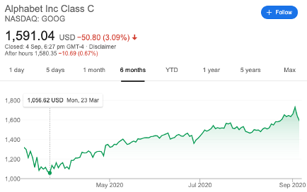

An equity investment is investing in a company through the purchase of its shares on a stock market. These shares are typically traded on a stock exchange.


An equity investment is investing in a company through the purchase of its shares on a stock market. These shares are typically traded on a stock exchange.
All about Equity.
The underlying idea of turning a profit from investing in stocks would be to invest with the expectation that they’ll rise in value in the form of capital gains and then selling the stock at a higher price than you purchased it for.

For instance, if I purchased a share of Alphabet Inc. on March 23rd at 1,056.62 USD and sold it on Sep 2nd at 1728.28 USD, I would have made a profit of 671.66 USD (63% profit).
Another approach would be to profit from dividends generated by the company. Dividends are a distribution of a company’s earnings to shareholders. This practice of dividend distribution as well as its amount is determined by the company, usually conducted on a quarterly basis. To adopt this approach, one would invest in dividend stocks; companies that pay out regular dividends.
Dividends can be paid out in 2 formats, either in cash (dividend cheque) or in the form of an automatic dividend reinvestment. Simply put, the company offers you more shares in the company instead of cash.
Stocks?
Many companies only offer a single type of share, known as common stock. Owning a common stock would make you a common shareholder, granting you ownership stake in the company and the following rights:
Owning preferred stock would naturally make you a preferred stockholder. However, unlike common stock, you would not have voting rights. In place of this, you are guaranteed to be paid a fixed amount of dividend before common shareholders are paid.
Shares you purchase for capital growth instead of dividends. To qualify as a growth stock, the company should generate positive cash flows and whose earnings are expected to grow at an above average rate relative to the market.
Shares that you purchase for dividend distributions. A dividend stock would usually be a company which pays out dividends on a regular basis.
The first time a company makes its shares available to the public is during an initial public offering. It is essentially new issues of a company’s shares on the stock market.
Shares that do not suffer as much during tough times in the economy. Defensive stocks are generally immune to the effects of a poor economic climate. They provide a constant dividend and report stable earnings regardless of the state of the market. However, defensive stocks may not be so profitable in terms of its capital growth and dividends. What it does do is to soften the blow you may be hit by should the other stocks in your portfolio suffer due to difficult times in the economy.
Shares of a large, recognized, well-established, and financially stable company. (The term "blue chip" comes from the game of poker, where a blue chip holds the highest value.) Blue-chip companies are generally rated to be strong enough to combat against economic downturns and operate profitably in the face of adverse economic conditions, generating a long record of stable and reliable growth for the company. As a result, blue-chip stocks tend to be on the higher side.
What's the catch?
A golden rule in investing is, Do Not Buy & Sell On Emotions. Emotional investing is generally frowned upon as one should always do their due diligence and research a stock before making an investment. Without careful analysis and swayed by your emotions, you might just buy yourself into a failing stock, headed for liquidation.
A common term being thrown around in the financial industry is, diversified portfolio. Owning a diversified portfolio is extremely important as it protects you from suffering potential losses, especially in a bear market. To put it simply, don’t put all your eggs in one basket.
For instance, investing in a blue-chip company such as Amazon would generally prove to be safe and profitable. However, the future is unpredictable, and if Amazon were to somehow go under, you would lose all of your money since you invested all of it into Amazon.
Instead, separate your eggs and invest in multiple stocks, preferably in different sectors. In doing so, should a specific sector do poorly, you would still have performing stocks in other sectors to reduce your entire portfolio’s net loss.
In fact, the recommended number of stocks in a portfolio to qualify as a diversified portfolio stands at 15 to 30 stocks.
Stock Prices
Well you’re in luck! Another option to investing in a company by purchasing its shares directly is to purchase a fund instead!
Not having enough money to invest was the next most common reason, cited by 59 per cent.
Among the respondents, 75 per cent could afford to invest between $100 and $500 a month.
Funds can also be purchased as an inexpensive way to hold a basket of assets such as stocks (albeit small percentages). This helps to diversify your portfolio and limit your losses in an inexpensive manner. While profits may not be high, neither are losses.
They mainly comprise of either Exchange-Traded Funds (ETFs) or Unit Trusts (UTs). Their main difference lies in the manner in which they are managed. ETFs tend to be passively managed because they are designed to replicate the performance of an index.
UTs, on the other hand, are professionally managed by fund managers who actively manage the assets within the funds with the aim to outperform the market. The reality however is that active fund managers usually fail to beat their index targets over the long term once investment costs are factored in.
Dollar-Cost Averaging (DCA) is a strategy where you buy more units when prices are low and lesser units when prices are high. Over time, the average cost of your investment could potentially be lower versus a one-time, lump sum investment.
For DCA to happen, you need to invest a fixed sum of money regularly into the same choice of investment over a period, regardless of market conditions. $500 a month is sufficient for you to kickstart your investment portfolio through DCA and you can diversify it by purchasing the same fund every month.